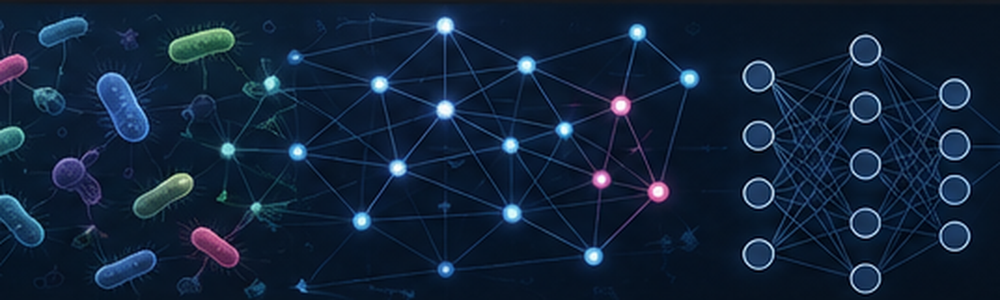

Graph Learning for Microbiome Research

Can microbial communities be represented as graphs? Absolutely.
Microbiomes consist of complex communities in which microorganisms coexist, compete, cooperate, and respond to their environment. Network-based approaches provide one way to represent these relationships and investigate patterns that may be difficult to identify from abundance tables alone [1].
A simple microbiome graph might contain:
- Nodes: microbial taxa such as species or genera
- Edges: inferred associations such as co-occurrence, conditional dependence, or other statistical relationships
- Node features: abundance, taxonomy, functional information, spatial location, or environmental characteristics
An important distinction is that an observed correlation or co-occurrence should not automatically be interpreted as a direct biological interaction. Microbiome sequencing data are compositional, and traditional correlation methods can generate spurious associations. Methods such as SPIEC-EASI were developed to infer sparse microbial association networks while accounting for the compositional nature of microbiome data [2].
From Networks to Graph Neural Networks
Traditional network analysis can reveal communities, highly connected taxa, central nodes, and patterns of association. Tools such as igraph provide algorithms for representing, analysing, and visualising complex networks in R [3].
Graph Neural Networks (GNNs) extend this idea by allowing machine-learning models to learn directly from graph-structured data. Instead of treating each microbial feature independently, a GNN can combine information about a node with information from its neighbouring nodes. Graph convolutional networks, for example, learn representations that incorporate both node features and local graph structure [4].
This makes graph learning particularly interesting for microbiome research, where relationships among microbial taxa may contain useful information in addition to their individual abundances.
Graph-based learning has already been explored in microbiome applications, including microbe–disease association prediction [5] and interpretable graph representation learning for time-varying microbiome data [6].
A Possible Workflow
A graph-learning workflow for microbiome data could involve:
- Preprocessing microbial abundance data
- Constructing or inferring a microbial association network
- Representing taxa as graph nodes
- Adding abundance, taxonomy, functional, or environmental information as node features
- Analysing the graph using traditional network methods
- Training a graph-learning model for classification, prediction, or representation learning
- Interpreting important taxa, communities, or graph structures
In R, igraph can be used for network construction, analysis, community detection, and visualization [3]. Deep-learning frameworks such as torch provide tensor operations and neural-network components that can support custom graph-learning implementations.
The broader field of microbiome machine learning has expanded considerably, with deep-learning approaches being explored for phenotype prediction, classification, representation learning, and biological interpretation [7].
Graph learning therefore offers an interesting direction because it provides a framework for considering not only which microbes are present, but also how relationships among microbes may contribute to the structure and behaviour of microbial communities. At the same time, computationally inferred edges should be treated as hypotheses about associations rather than automatically as experimentally confirmed ecological interactions [1] [2].
References
[1] Faust, K., & Raes, J. (2012). Microbial interactions: from networks to models. Nature Reviews Microbiology, 10, 538–550. https://doi.org/10.1038/nrmicro2832
[2] Kurtz, Z. D., Müller, C. L., Miraldi, E. R., Littman, D. R., Blaser, M. J., & Bonneau, R. A. (2015). Sparse and compositionally robust inference of microbial ecological networks. PLOS Computational Biology, 11(5), e1004226. https://doi.org/10.1371/journal.pcbi.1004226
[3] Csárdi, G., & Nepusz, T. (2006). The igraph software package for complex network research. InterJournal, Complex Systems, 1695. https://igraph.org
[4] Kipf, T. N., & Welling, M. (2017). Semi-supervised classification with graph convolutional networks. International Conference on Learning Representations (ICLR). https://arxiv.org/abs/1609.02907
[5] Gong, H., You, X., Jin, M., Meng, Y., Zhang, H., Yang, S., & Xu, J. (2022). Graph neural network and multi-data heterogeneous networks for microbe-disease prediction. Frontiers in Microbiology, 13, 1077111. https://doi.org/10.3389/fmicb.2022.1077111
[6] Melnyk, K., Weimann, K., & Conrad, T. O. F. (2023). Understanding microbiome dynamics via interpretable graph representation learning. Scientific Reports, 13, 2058. https://doi.org/10.1038/s41598-023-29098-7
[7] Hernández Medina, R., Kutuzova, S., Nielsen, K. N., et al. (2022). Machine learning and deep learning applications in microbiome research. ISME Communications, 2, 98. https://doi.org/10.1038/s43705-022-00182-9